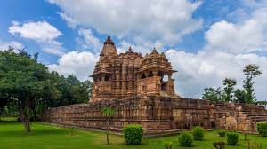
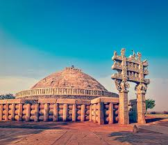
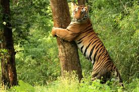
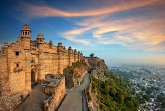
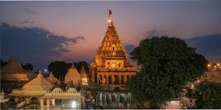

Khajuraho

A UNESCO World Heritage Site famous for its group of Hindu and Jain temples. They are renowned worldwide for their intricate, elaborate, and erotic sculptures and Nagara style of architecture.
Sanchi

Famous for the Great Stupa, a UNESCO World Heritage Site, which is one of the oldest stone structures in India and a significant Buddhist centre, commissioned by Emperor Ashoka in the 3rd century BCE.
Kanha National Park

One of the largest national parks in the state, it is famous for its significant population of Bengal tigers and the rare Barasingha (Swamp Deer), inspiring Rudyard Kipling's The Jungle Book.
Gwalior

A historic city dominated by the massive Gwalior Fort, one of the most impregnable fortresses in North and Central India, housing several palaces and temples.
Ujjain

One of the seven sacred Hindu cities (Sapta Puri), located on the banks of the Kshipra River. It is home to the Mahakaleshwar Jyotirlinga Temple and is one of the four sites for the Kumbh Mela.